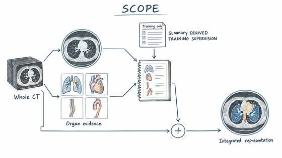
Semantically Calibrated Evidence Composition for CT Vision-Language Learning
arXiv preprint, 2026 · Paper
Composes anatomy-indexed findings with whole-volume context and calibrates the evidence against a diagnostic summary.
Postdoctoral Researcher · University of Pennsylvania

My research studies multimodal AI, from vision-language foundation models to agents that reason and act. My current focus is multimodal AI for healthcare, including vision-language pretraining for 3D medical images, multimodal LLMs, and evidence-grounded clinical agents. This direction builds on my Ph.D. research in embodied and autonomous systems, where I studied multi-sensor perception, vision-language reasoning, planning, and reinforcement learning. I remain involved in collaborative work on embodied AI, including vision-language-action learning and language-guided robotics.
I received my Ph.D. in Computer Technology from the University of Science and Technology of China (USTC), where I worked in the LINKE Lab with Prof. Yanyong Zhang and Assoc. Prof. Jianmin Ji. I earned my B.E. in Applied Physics from Anhui University of Science and Technology.
My current work has two primary directions in healthcare, alongside continuing collaborations in embodied AI:
Authors are listed in publication order; Guoliang You is in bold and * marks equal contribution. Preprints are identified separately from peer-reviewed publications.
Click an illustration to view the hand-drawn overview or the original paper figure.

arXiv preprint, 2026 · Paper
Composes anatomy-indexed findings with whole-volume context and calibrates the evidence against a diagnostic summary.
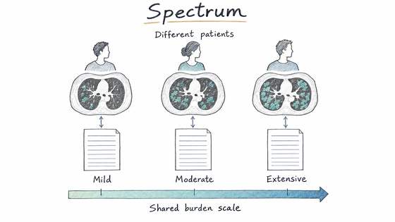
arXiv preprint, 2026 · Paper
Learns lower-to-higher disease-burden relationships across patients without longitudinal pairs.
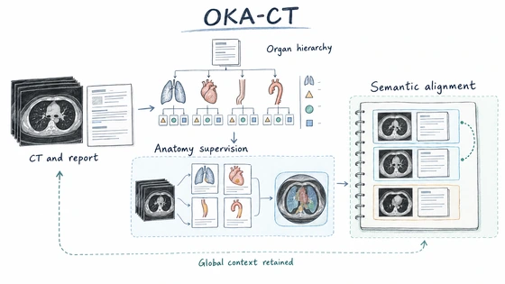
arXiv preprint, 2026 · Paper
Links 3D visual features to clinically structured, organ-level report knowledge.
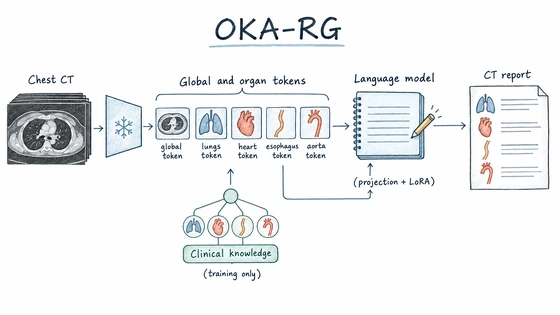
Journal of Imaging Informatics in Medicine supplement; SIIM CAIMI, 2026 · Abstract
Uses organ-aware visual tokens and clinical knowledge to guide CT report generation.
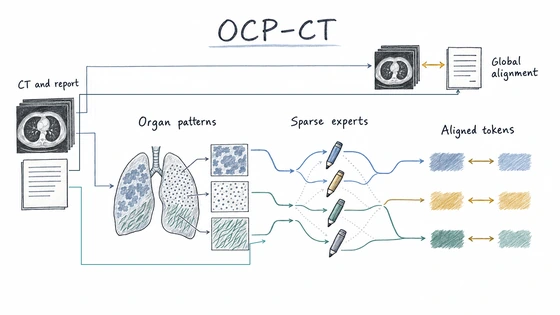
arXiv preprint, 2026 · Paper
Models radiological patterns conditioned on the organ in which they occur.
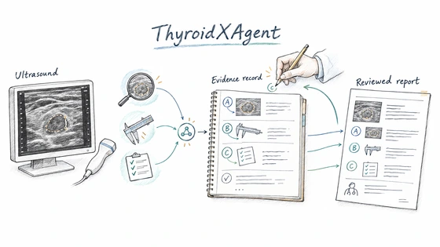
Collaborative arXiv preprint, 2026 · Paper
Studies traceable evidence and multi-step reasoning for thyroid ultrasound diagnosis.
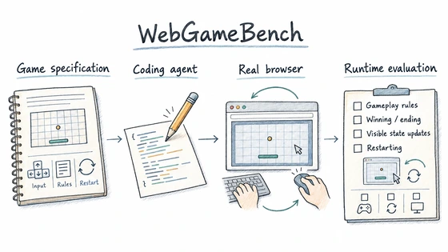
arXiv preprint, 2026 · Paper
Evaluates the delivered game through real browser interaction, beyond whether its code builds.
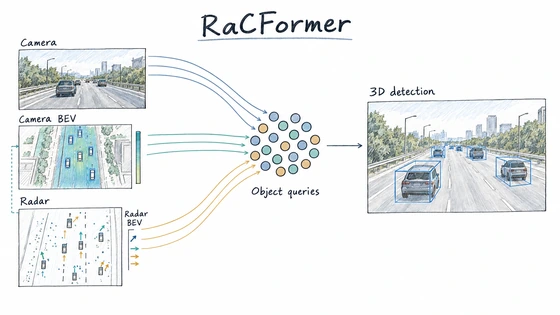
CVPR, 2025 · Paper
Fuses radar and camera evidence through object queries for 3D detection.
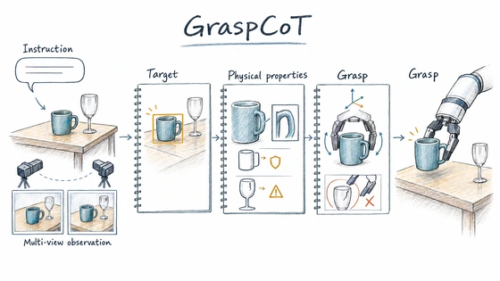
ICCV, 2025 · Paper
Reasons about object properties to ground flexible language instructions in robotic grasps.
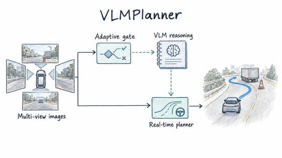
ACM Multimedia, 2025 · Paper
Connects visual-language scene understanding with motion planning for autonomous driving.
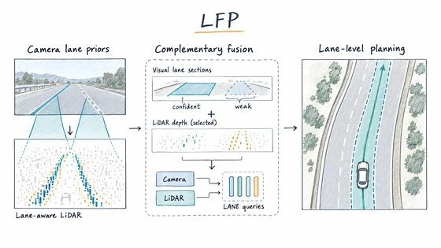
arXiv preprint, 2024 · Paper
Combines camera and LiDAR features for lane-level planning in autonomous driving.
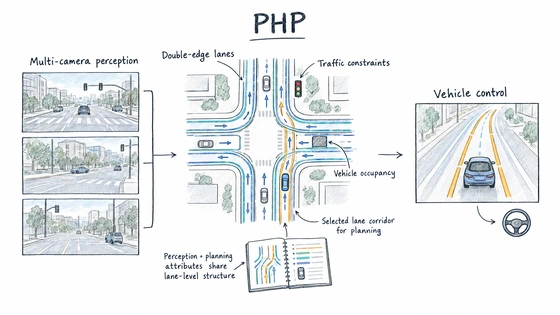
IEEE Robotics and Automation Letters, 2024 · Paper
Uses structured perception output to connect lane-level mapping and route planning.
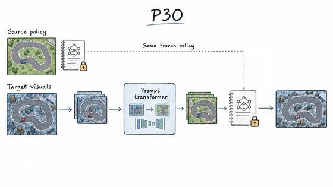
ICME, 2023 · Paper
Transfers pretrained visual features into reinforcement learning through prompting.
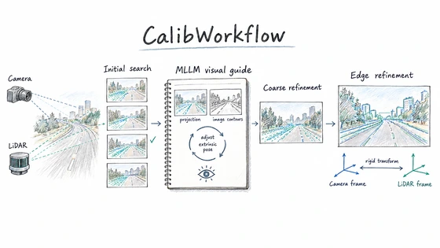
ACM Multimedia, 2025 · Paper
Uses a multimodal LLM to guide a cross-sensor calibration workflow.
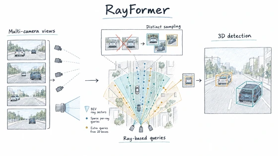
ACM Multimedia, 2024 · Paper
Places and samples object queries along camera rays to reduce ambiguous features.
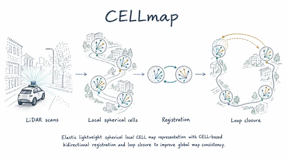
ICRA, 2025 · Paper
Builds a compact spherical map representation for LiDAR localization and mapping.
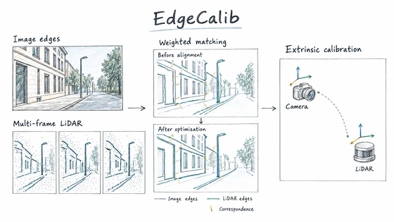
IEEE Robotics and Automation Letters, 2024 · Paper
Matches weighted edge features across frames to calibrate LiDAR and camera without a target.
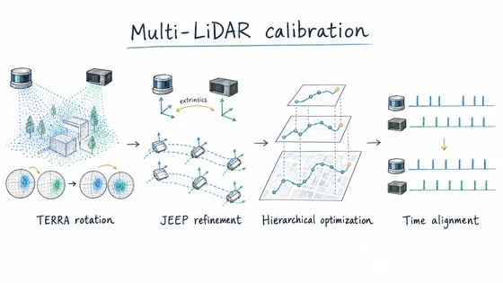
arXiv preprint, 2024 · Paper
Initializes multi-LiDAR rotation with a spherical descriptor, then refines extrinsic calibration.
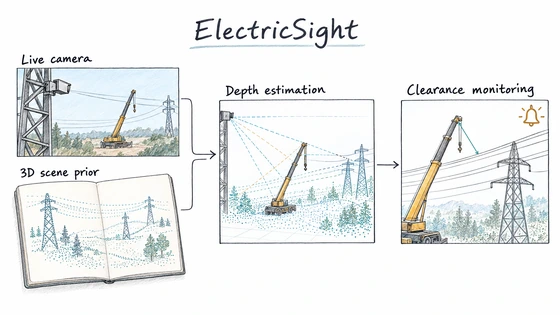
arXiv preprint, 2025 · Paper
Combines image-based hazard detection with 3D scene priors to estimate power-line clearance.
Some of the most memorable parts of my research happened away from a desk: building platforms, testing them outside, and learning what changes when a model meets a physical system. These photos are from that part of my journey.